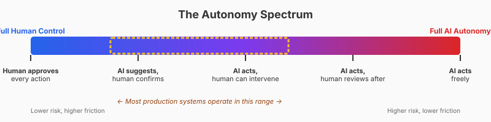
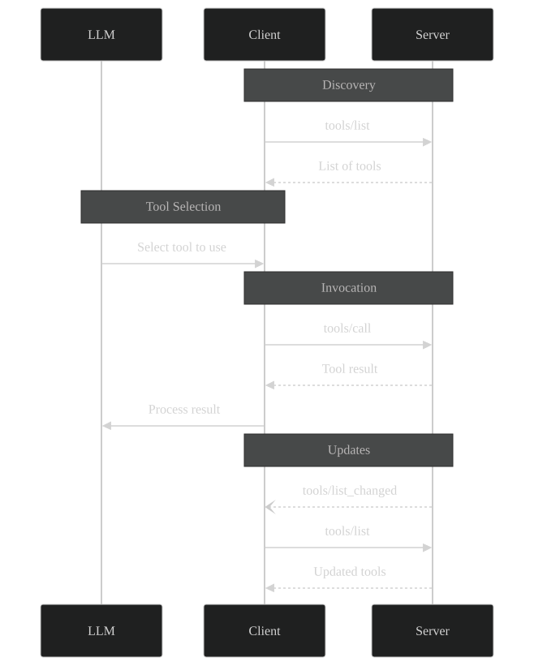

The Design Space for AI+Tools
What abstractions do we need for AI agents to use tools?
Before looking at what exists, let's ask: if we were designing the infrastructure for AI+tools from scratch, what abstractions would we need?
One option is: nothing. And maybe that is where we will end: we have the web that works for human, why can't it work for agents?
This is the design space. Some of these problems are well-addressed today; others are wide open.
Describing tools
The AI needs to know what tools exist and how to use them:
- What the tool does — when to use it, when not to use it
- Input schema — parameters, types, constraints
- Output schema — what it returns
- Error conditions — what can go wrong
This is analogous to the WSDL problem, but with a twist: the consumer is an AI that can tolerate imperfect descriptions. We don't need perfect machine-readable specs — we need good enough descriptions that an LLM can understand.
What exists
JSON Schema for input/output. Docstrings. Tools like FastMCP that auto-generate schemas from Python.
What's missing
Standards for "when to use" vs "when not to use." Semantic versioning for tool behavior. Ways to express preconditions and side effects.
Example — minimal vs better:
# Minimal (LLM may guess wrong)
@mcp.tool()
def search_tickets(status: str, date: str) -> list[dict]:
"""Search support tickets."""
...# Better (explicit about formats, constraints, intent)
@mcp.tool()
def search_tickets(
status: Literal["open", "closed", "pending"],
created_after: str,
assignee: str | None = None,
limit: int = 50
) -> list[dict]:
"""Search support tickets in the helpdesk system.
Use this tool when the user asks about support tickets, customer issues,
or wants to find cases matching certain criteria. Do NOT use this for
searching knowledge base articles (use search_kb instead).
Args:
status: Filter by ticket status. Use "open" for active issues,
"closed" for resolved ones, "pending" for awaiting response.
created_after: ISO 8601 date (e.g., "2024-01-15"). Only returns
tickets created on or after this date.
assignee: Email of the assigned agent. If None, returns tickets
assigned to anyone. Use "unassigned" for tickets with
no assignee.
limit: Maximum number of tickets to return (1-200). Default 50.
Returns:
List of ticket objects with id, subject, status, created_at, assignee.
Empty list if no matches found (not an error).
"""
...The key improvements:
- Type hints with Literal: The LLM sees exactly which values are valid
- When to use (and when not to): Prevents the LLM from picking the wrong tool
- Format examples: "ISO 8601 date (e.g., '2024-01-15')" removes ambiguity
- Edge cases explained: What does None mean? What does an empty result mean?
This is documentation for a non-human reader. Write it like you're explaining to a capable but literal-minded colleague who has never seen your codebase.
Discovering tools
The AI needs to learn what tools are available. This requires:
- Listing available tools — an endpoint or mechanism to enumerate tools
- Dynamic updates — if tools change, the AI should be notified
- Filtering/search — with many tools, the AI may need to search rather than list all
This is analogous to the UDDI problem, but scoped differently. UDDI imagined global registries across organizations; for AI+tools, discovery is usually within a session or a configured set of servers.
What exists
Protocol-level discovery (e.g., tools/list in MCP). Configuration files listing available tools.
What's missing
Semantic search over tools ("find me a tool that can send emails"). Hierarchical organization. Federation across tool providers.
Invoking tools (communication protocol)
Once the AI decides to use a tool, how does the call happen?
- Wire format — how is the request encoded? JSON? XML? Binary?
- Transport — HTTP? WebSockets? stdin/stdout for local tools?
- Synchronous vs streaming — does the tool return all at once or stream results?
- Error handling — how are errors communicated? Retries?
This is analogous to SOAP, but much simpler. The modern answer is JSON over HTTP (or stdio for local tools), with JSON-RPC as a thin layer for request/response correlation.
What exists: JSON-RPC 2.0 provides a minimal, transport-agnostic protocol:
// Request
{"jsonrpc": "2.0", "method": "get_weather", "params": {"location": "NYC"}, "id": 1}
// Response
{"jsonrpc": "2.0", "result": {"temp": 72, "conditions": "sunny"}, "id": 1}What's missing
Streaming is ad-hoc. Long-running operations need polling or callbacks. No standard for partial results.
Managing autonomy
This is new — we didn't have this problem with SOAP/WSDL because clients were deterministic. If you called a SOAP service, it did exactly what you programmed it to do.
AI clients are different: they interpret, reason, and sometimes surprise you. The question becomes: how much can the AI do without asking?

The autonomy slider — from full human control (approve every action) to full AI autonomy (AI acts freely). Most real systems live somewhere in the middle.
Where you land depends on:
- Stakes: reading a file vs. sending an email vs. transferring money
- Reversibility: can you undo the action?
- Trust: how well-tested is the AI's judgment for this task?
- Context: is this a demo, a personal assistant, or a production system?
The "Click" problem
Remember the movie Click (2006) with Adam Sandler.

Click (2006) — a cautionary tale about automation that learns your preferences.
In the film, Sandler's character gets a universal remote control that can fast-forward through boring parts of his life. Convenient! But the remote starts learning his preferences and auto-piloting his life — skipping arguments with his wife, fast-forwarding through his kids growing up, missing moments he would have wanted to experience.
This is a cautionary tale for AI autonomy:
- Learning preferences is not the same as understanding intent. The remote learned "he skips arguments" but not "he values his family."
- Defaults compound. One shortcut becomes a pattern; a pattern becomes autopilot.
- You can't unlive skipped moments. Some actions are irreversible.
When we design AI systems that "learn from user preferences" to reduce confirmation prompts, we risk building a Click remote.
What exists
Guidelines like "human in the loop." Confirmation prompts. Allowlists/blocklists.
What's missing
Policy frameworks. Permission systems with fine-grained control. Audit infrastructure. Ways to express "the AI can do X but not Y" declaratively. Middleware that enforces autonomy policies.
Patterns for managing autonomy
- Confirmation prompts — ask before executing
- Allowlists/blocklists — restrict which tools can be called
- Sandboxing — run tools in isolated environments
- Audit logging — record every invocation for review
- Rate limiting — prevent runaway AI
- Capability escalation — start limited, expand with trust
- Semantic guardrails — use another AI to review proposed actions
Testing
Testing is another area where we lack mature abstractions.
Traditional software testing has well-established patterns: unit tests, integration tests, end-to-end tests. For AI systems with tool access? We're mostly flying blind.
What makes testing AI+tools hard?
- Non-determinism: The same input may produce different outputs.
- Combinatorial explosion: 20 tools × 5 parameters each = enormous test space.
- Context sensitivity: Behavior depends on conversation history, phrasing.
- Emergent behavior: The AI might use tools in unanticipated ways.
- No ground truth: For many tasks, there's no single "correct" answer.
What exists
Manual probing. Adversarial testing. Eval frameworks like promptfoo, Braintrust.
What's missing
- Behavioral specifications: "the AI should never call
delete_filewithout confirmation" - Coverage metrics: Did we exercise all tools? All parameter combinations?
- Regression detection: Did this prompt change cause different behavior?
- Simulation environments: Mock tools that look real but aren't
- Middleware for test harnesses: Intercept calls, inject failures, record/replay
Tool proliferation
If you expose 500 tools to an LLM, it will struggle. Context windows are finite, and more tools mean more tokens spent on descriptions rather than reasoning.
What exists
Flat tool lists. Manual curation.
What's missing
- Hierarchical organization: Group tools into categories
- Dynamic loading: Only expose tools relevant to the current task
- Semantic search: Let the AI search for tools by description
- Agent delegation: Instead of one agent with 500 tools, have specialized agents
Other gaps
| Area | What we have | What we need |
|---|---|---|
| Observability | Basic logging | Standardized traces, anomaly detection, cost attribution |
| Security | Transport-level auth | Fine-grained permissions, prompt injection defense |
| Versioning | Nothing standard | Tool version negotiation, deprecation policies |
| Streaming | Ad-hoc implementations | Standard protocol for partial results |
Summary: the design space
| Need | Analogous to | Status |
|---|---|---|
| Describing tools | WSDL | Partially solved (JSON Schema + natural language) |
| Discovering tools | UDDI | Partially solved (protocol-level listing) |
| Invoking tools | SOAP | Mostly solved (JSON-RPC over HTTP/stdio) |
| Managing autonomy | New | Wide open |
| Testing | New | Wide open |
| Tool proliferation | New | Wide open |
The first three are the "classic" problems from the services era — and they're reasonably well-addressed today, though not perfectly.
The last three are genuinely new problems introduced by AI clients. This is where we need more experience, more abstractions, and eventually middleware.
What exists today: MCP as an example
The Model Context Protocol (MCP) is one attempt to standardize some of these needs. It's worth understanding what MCP covers and what it doesn't.
MCP is developed by Anthropic and is designed for AI hosts (like Claude) to interact with external tools and data sources.
9.1 What MCP standardizes
Describing tools — Tools are described with JSON Schema for inputs, plus natural language descriptions:
{
"name": "get_weather",
"description": "Get current weather information for a location",
"inputSchema": {
"type": "object",
"properties": {
"location": {"type": "string", "description": "City name or zip code"}
},
"required": ["location"]
}
}Discovering tools — Clients can call tools/list to enumerate available tools:
// Request
{"jsonrpc": "2.0", "id": 1, "method": "tools/list"}
// Response
{"jsonrpc": "2.0", "id": 1, "result": {"tools": [...]}}Invoking tools — Clients call tools/call with the tool name and arguments:
// Request
{"jsonrpc": "2.0", "id": 2, "method": "tools/call",
"params": {"name": "get_weather", "arguments": {"location": "NYC"}}}
// Response
{"jsonrpc": "2.0", "id": 2, "result": {"content": [{"type": "text", "text": "72°F, sunny"}]}}Lifecycle — MCP defines initialization, capability negotiation, and notifications (e.g., tools/list_changed).
Transport — MCP works over stdio (for local tools) or HTTP with Server-Sent Events (for remote tools).

MCP message flow — the client discovers tools from the server, the LLM selects which tool to use, the client invokes it, and the server can notify of changes.
9.2 What MCP doesn't standardize
MCP is a wire protocol. It tells you how to describe, discover, and invoke tools. It does not tell you:
- Autonomy policies: Who can call what? When should the user be asked?
- Testing infrastructure: How do you test AI+tool behavior?
- Tool proliferation: How do you organize 500 tools?
- Observability: How do you trace and debug tool invocations?
- Fine-grained security: Beyond transport-level auth
MCP gives you the primitives; you build the governance layer.
9.3 MCP vs REST APIs
You should still expose REST APIs. MCP doesn't replace them.
Think of it as layers:
- Core APIs (REST/SDK) are the stable foundation for all clients
- MCP is an additional surface optimized for AI hosts
An MCP server usually wraps existing REST APIs — it's a different contract, optimized for AI consumption.
9.4 When to use MCP
MCP helps most when:
- Many AI hosts need the same capabilities
- You want consistent tool schemas across ecosystems
- You want discoverability and standard invocation semantics
A plain API wrapper is often enough when:
- You control both the host and the service
- The integration is unique to one system
- You're still iterating on the product boundary
Rule of thumb: Build on APIs for stability; add MCP for AI interoperability.
9.5 Other resources
- MCP Specification
- FastMCP — Python library for building MCP servers
- JSON-RPC 2.0 Specification
Conclusion: where we are
We've come full circle from the services era:
| Era | Problem | Solution attempted | Outcome |
|---|---|---|---|
| 2000s | Machine-to-machine services | SOAP/WSDL/UDDI | Failed (too complex) |
| 2010s | API integration | REST + documentation | Succeeded (good enough) |
| 2020s | AI+tools | MCP + ??? | In progress |
The "classic" problems (description, discovery, invocation) are reasonably solved. MCP and similar protocols address them adequately.
The new problems (autonomy, testing, tool proliferation) are wide open. This is where the next generation of infrastructure will emerge.
For now
- Use MCP (or similar) for the wire protocol
- Build custom solutions for autonomy, testing, observability
- Design for replaceability — your solutions will be superseded
Standards succeed when they reduce friction, not when they maximize expressiveness. Whatever emerges for autonomy and testing will need to be simple enough for average developers to adopt.